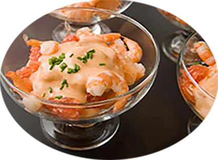

Verrines de crevettes, pamplemousse cocktail

Pour 6 personnes
Préparation : 15 mn
Repos
Ingrédients
- 1 pamplemousse
- 6 c. à soupe de mayonnaise
- 3 c. à soupe de ketchup
- 1 c. à café de concentré de tomate
- 1 c. à soupe de crème fraiche
- 1 c. à soupe de Whisky
- ciboulette
- sel et poivre
Recette
- Mélangez la mayonnaise, le ketchup, le concentré de tomate, la créme fraîche et le whisky.
- Pelez le pamplemousse, enlevez les parties blanches et détaillez la pulpe en petits dés.
- Coupez chaque crevette en 4 et ajoutez les au pamplemousse.
- Ajoutez la sauce et mélangez.
- Salez et poivrez à votre convenance.
- Répartissez la préparation des les verrines, décorez avec un peu de ciboulette et réservez au frais jusqu'au moment de servir.
|